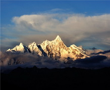
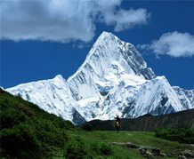
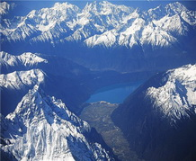
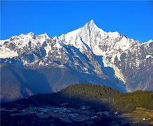
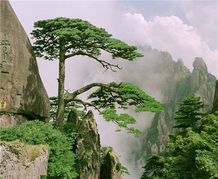
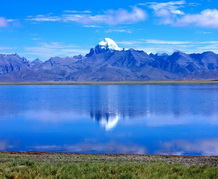
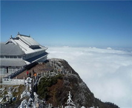
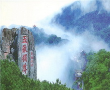

山峰
分类：全部|图片|视频
- 
云中的天堂--南迦巴瓦峰
南迦巴瓦峰，是中国西藏林芝地区最高的山，海拔7782米。为西藏最古老的佛教“雍仲本教”的圣地。同时，紧邻着的雅鲁藏布大峡谷绕着他转了一个马蹄形的弯，随后通向印度洋方向。
- 
风停了脚步--贡嘎山
贡嘎山（Minya Konka）位于四川省康定以南，是大雪山的主峰。周围有海拔6,000米以上的山峰45座，主峰更耸立于群峰之巅，海拔7,556米。高出其东侧大渡河6,000米，被喻为“蜀山之王”。
- 
心灵的守望--珠穆朗玛
珠穆朗玛，藏语意为“圣母之水”。珠穆朗玛峰位于定日县境内，喜玛拉雅中段的中尼边界上，海拔8844.43米，是世界第一高峰，峰顶常年积雪。整个珠峰自然保护区划分为核心保护区...
- 
雪神的仪仗队--梅里雪山
梅里雪山处于世界闻名的金沙江、澜沧江、怒江“三江并流”地区，是一座北南走向的庞大雪山群体，北段称梅里雪山，中段称太子雪山，南段称碧罗雪山，北连西藏阿冬格尼山，平均海拔...
- 
上帝的盆景--黄山
黄山，中国5A级旅游景区、国家级风景名胜区、全国文明风景旅游区示范点，中国十大名山之一，在“中华十大名山”排名中居第四位，位于安徽省南部黄山市境内（景区由市直辖）...
- 
藏民心中的圣山--冈仁波齐
冈仁波齐与梅里雪山、阿尼玛卿山脉、青海玉树的尕朵觉沃并称藏传佛教四大神山。 冈底斯山脉横贯在北部昆仑山脉与南部喜马拉雅山脉之间，如一条巨龙卧在西藏西部阿里广阔的高原上。
- 
从盆地升向天庭--峨眉山
峨眉山位于四川省乐山市峨眉山市境内，景区面积154平方千米，最高峰万佛顶海拔3099米。地势陡峭，风景秀丽，有“秀甲天下”之美誉。全国重点文物保护单位，国家重点风景名胜区...
- 
华夏的图腾--泰山
泰山（Mount Tai），世界文化与自然双重遗产，世界地质公园，全国重点文物保护单位，国家重点风景名胜区，国家AAAAA级旅游景区。